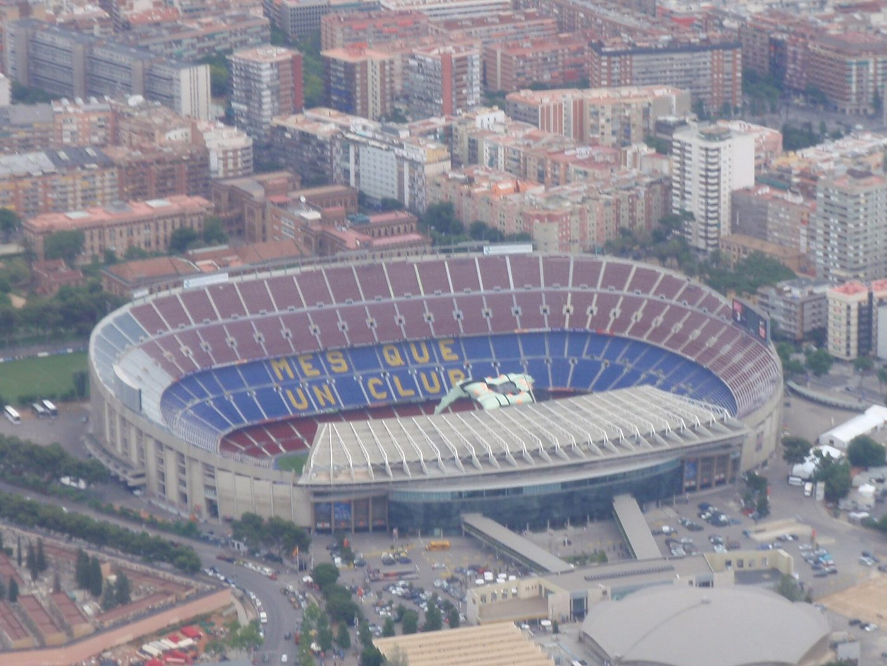
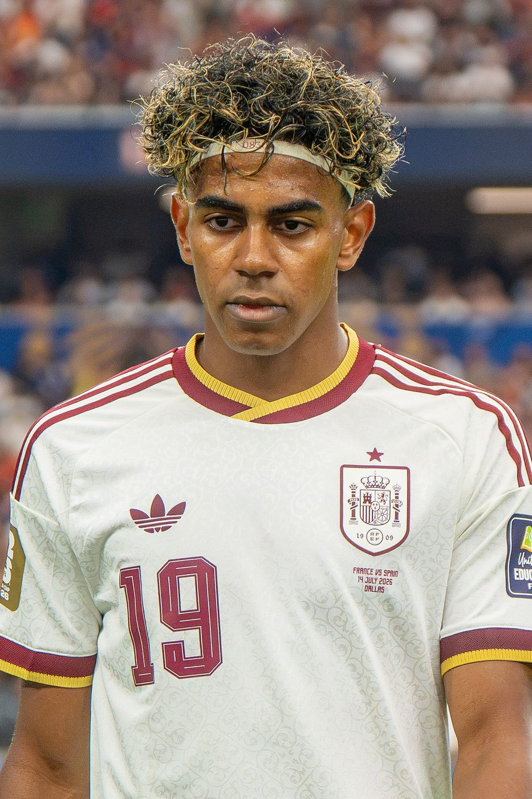

Perfect Barça, furious Madrid
Barcelona have won all eight league games. Real Madrid won too, but Vinícius Júnior's afternoon went badly wrong, and El Clásico is only two weeks away.
Barcelona 3–0 GetafeEight games, eight wins


Barcelona are making La Liga look easy. Against Getafe they were ahead inside two minutes when Anthony Gordon, the England winger who joined from Newcastle, slalomed towards the edge of the box and scored his first goal for the club, on his seventh appearance. His shot took a big deflection on the way in. Judging by his roaring celebration, he did not mind one bit. Gabriel Jesus, once of Manchester City and Arsenal, made it 2–0 on the half-hour, and Jules Koundé added a third in the 73rd minute, set up by Lamine Yamal. And they did all of this without their leading scorer, Raphinha, who missed out with a minor thigh problem.


That's eight wins from eight league games, an immaculate start that equals the best in the club's history. Barça have scored 34 goals and let in just seven. If they keep this up, the rest of La Liga may as well start playing for second place.
Barça's perfect start
Real Madrid 1–0 VillarrealVinícius sees red

.jpg){kind=link}
Real Madrid won, but nobody was talking about the goal afterwards. Young winger Yan Diomande scored the only goal in the 62nd minute, set up by Federico Valverde. It was his first for the club. Then came the chaos. Vinícius Júnior thought he'd made it 2–0, and José Mourinho, now Madrid's coach and once Manchester United's, went sprinting down the touchline to celebrate. But the video referee had spotted something in the build-up: Vinícius had pulled the hair of Villarreal's Nathan Saliba. The goal was ruled out, and Vinícius was shown a straight red card.
He argued furiously as he left, a petulant exit that the referee mentioned in his match report. Later, a more contrite Vinícius posted an apology online: "Sorry to my team and my fans." Even Villarreal defender Juan Foyth said the red card was deserved, though he didn't think Vinícius had meant to hurt anyone.
"Sorry to my team and my fans."
Vinícius Júnior, apologising on Instagram after his red card
.jpg){kind=link}
Madrid hung on with ten men for the last 18 minutes, but it was not a happy night. Mourinho was shown a yellow card, had to be held back by his own staff more than once, and then, for the first time since taking the job, refused to attend his post-match press conference. Kylian Mbappé wasted a couple of good chances. The BBC's Spanish football reporter called it "an immensely disappointing performance". Real are third, six points behind Barcelona.
Rule check: is hair-pulling really a red card?
Yes. Under Law 12 of the Laws of the Game, deliberately pulling an opponent's hair with force counts as violent conduct, which means a straight red card. In the Premier League, referees now look more carefully at how hard the pull was and whether it was deliberate, but experts say Vinícius's yank would have been a red card in England too.
Countdown: El Clásico
Barcelona v Real Madrid · Sunday 25 October. The biggest game in Spanish football is two weeks away, and the question already being asked in Madrid is whether Vinícius will be allowed to play. A ban for violent conduct could rule him out. Nothing has been decided yet. Before then, Barcelona travel to Real Betis on Saturday 17 October, and Betis are fourth, so it won't be easy.
Did you know?
El Clásico ("The Classic") has been played more than 250 times. Spain are also the reigning world champions, after beating Argentina 1–0 in extra time in the World Cup final in July, so plenty of players in this fixture now have winners' medals.